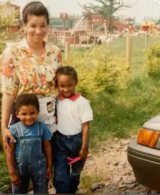

Published and developing long-form research outputs and repository records.
LIVING BIOGRAPHICAL RECORD
Biographical Record
A neutral, source-led summary of my public record, organised in an encyclopaedic format that can expand as work, sources and milestones accumulate. It is independent of Wikipedia.
OVERVIEW
Grace
Grace is a British interdisciplinary researcher, technologist, educator and creative practitioner whose public record spans technology, audiovisual systems, education, AI ethics and governance, music, public-service environments, research and creative practice.
The record is organised as a connected biography rather than a single-career profile. It distinguishes current work from historical material, formal research from public discussion, and documented claims from matters that remain under research.
BIOGRAPHICAL INDEX
Early life and education
Grace was born in Farnborough, Kent. She attributes much of her career direction and moral development to her parents, and to early service involving children and the church. Those settings reinforced a practical emphasis on responsibility, contribution, care for others and constructive use of opportunity.
She was introduced to music as a child and, as a child and young adult, regularly spent afternoons gardening with her mother. She also often accompanied her siblings to workplace and family functions connected with her father's companies, where she mixed with colleagues' children, including children from Japanese families. Japanese animation was therefore among the forms of media familiar to her while growing up, and she watched anime from childhood.

Education: Middlesex University — jazz; University of West London — music technology and audio engineering; University of Roehampton / QAHE — business; Birkbeck, University of London — postgraduate study in AI, Ethics & Society. Recognition of prior learning linked earlier study across the route, alongside workplace learning and independent research.
Early career
Grace's early career developed through project-based work across technology, healthcare and professional-services environments. In 2007 she gained corporate experience at Reuters through Brook Street, supporting a SharePoint data-migration project and user-guide creation; she subsequently worked across NHS administrative and IT settings, including Lewisham and primary-care environments.
By the early 2010s she had moved further into enterprise systems and audiovisual support, including work at JP Morgan in Canary Wharf. This period established the combination that would recur later in her career: technical systems, user support, administration, communication and service delivery within complex organisations.
Professional career
Her professional work has centred on technology-enabled service delivery across financial services, sport, healthcare, education and corporate environments. Notable projects included audiovisual and systems work at Tottenham Hotspur during the Northumberland Development Project and at UBS during the 5 Broadgate technology fit-out, where her responsibilities touched remote monitoring, UAT, user support, technical documentation, service metrics and operational improvement.
Across these roles she developed a distinctive profile combining audiovisual systems, enterprise technology, business support and user-facing communication. Further work in education, public service and professional-society settings broadened that base into teaching, mentoring, research, governance and technology-focused professional development.
Business and venture development
Business activity has included operational work, entrepreneurship, startup development and the practical side of turning ideas into viable projects. Current interests are centred less on presenting a fixed corporate identity and more on research-led development, collaboration and building structures that can support future work.
Venture concepts are kept separate from established organisations or completed commercial activity so that exploratory ideas are not presented as more mature than they are.
Research and publications
Research interests include artificial intelligence, ethics, governance, technology, institutions, public administration, regulation, provenance and the interaction between formal systems and lived outcomes. Separate pages distinguish research questions, reference infrastructure, case studies and longer written outputs.
Repository and identity services such as ORCID, Google Scholar and Zenodo provide external points of reference. Stable public records are preferred where they can directly support a publication, date or research claim.
Bounded research problems grouped by area, evidence status and method.
Creative practice
Creative practice includes saxophone, music, sound, audiovisual production, visual research and developing art practice. The record treats performance, production, systems and visual culture as related but distinct strands.
Media-rich pages can hold large visual or video modules, titles and concise context while preserving the restrained editorial aesthetic of the wider site.
Performance, instruments, composition development and external listening profiles.
Studio, live-event, sound-desk and audiovisual production practice.
Structured professional and creative visual portfolio.
Media and public-facing work
Media-facing activity spans audiovisual production, live and recorded discussion, public speaking, digital platforms and visual presentation. These are treated as separate formats rather than collapsed into one category: production work, public conversation and personal presentation each serve different purposes.
The public-facing pages are therefore a curated route into selected material rather than a social-media feed or claim to a conventional media career.
Teaching, mentoring and community contribution
Teaching, facilitation, mentoring and community contribution recur across the record. They include classroom work, knowledge-sharing, practical guidance, church and community service, and contribution to learning environments outside conventional employment titles.
Public life and civic contribution
Grace has also written directly to MPs and other public office-holders on matters including higher education, public services, transport and access, social policy, institutional fairness and questions affecting everyday civic life. The correspondence is generally practical in tone: identifying a problem, setting out the relevant context and asking what action, clarification or policy route is available.
Some of that correspondence has received replies, acknowledgements or onward referrals indicating that the issue was being considered, clarified or raised with the relevant department or authority. Such responses are treated as evidence of engagement rather than as endorsement of every argument made.
Prepared speaking, spontaneous live discussion, teaching, advocacy and civic or public-interest activity are kept distinct so that each form carries the correct evidential weight. A short debate clip is treated differently from a formal paper, and a representation to an institution is distinguished from an institutional decision.
Over time this section can record talks, panels, debates, teaching, advocacy, acknowledgements and other dated public contributions. Recognition is kept separately where contribution would not otherwise be obvious from job titles alone.
Achievements and recognition
This section brings together formal recognition, recommendations, acknowledgements, documented contribution, advocacy outcomes and work whose value is not fully visible from job titles alone.
The emphasis is evidential: recognition received, contribution made and outcomes achieved should be separated from aspirations or self-description.
Public presentation and identity
The public identity presented through the site is intentionally multidimensional rather than built around one job title. Research, technology, music, education, faith, heritage and public contribution are shown as distinct strands within the same record.
Presentation is curated, but the aim is not to manufacture a persona. Historical material, developing work and current activity are labelled differently so that visitors can distinguish chronology, evidence and context.
Other endeavours
Other areas of continuing interest include sport and coaching-related development, horticulture, language learning, independent study, visual research and multidisciplinary project work.
Personal life
Grace is unmarried and does not define herself primarily through marriage or family roles, although she currently lives within a family environment.
Earlier work included professional roles involving other people's children in education, facilitation and care-related settings, work she found meaningful without making parenthood the centre of her own identity.
Grace met a former partner while working at JP Morgan in 2013. During the pandemic she chose to leave the relationship as its future direction remained uncertain; personal differences and diverging long-term aspirations also shaped the decision.
Friendship has existed alongside a strong Christian and church-centred life. At periods of particularly intensive church involvement, the demands on her time sometimes made maintaining ordinary time with friends and family more difficult, contributing to later reflection on friendship, Christian community and the place of each within a balanced life.
Faith and heritage
Christian faith is represented as a longstanding part of formation, study, service and ethical reflection. The Faith and Bible Studies pages distinguish personal study from questions that remain contested across Christian traditions.
Heritage research is maintained separately from biography because genealogical evidence has its own standards. The site distinguishes biological descent, legal adoption, collateral connection, oral tradition and wider community belonging rather than compressing them into a single ancestry claim.
Selected works and records
This is a living index rather than a finished biography. Sections can be added, split or reordered when the underlying record becomes substantial enough to justify them.
A future body of publications may justify a fuller bibliography; a larger performance catalogue may justify a discography; a sequence of formal appointments may justify its own section. Structure follows the life rather than forcing the life into a fixed template.
Sources and external links
Biographical statements are supported according to the type of claim being made. Public records are strongest for dates, offices, publications and formal achievements; first-person material is appropriate for intentions, personal interpretation and private experience; family history may require a mixture of documentary and oral evidence.
Where sources disagree, the record can state the most probable interpretation based on the current source set and label it as documented, highly probable, probable, plausible, unresolved or contradicted until stronger evidence changes the balance.